Components of Cancer Care
The foundational treatment modalities used to fight cancer. Understanding these is essential because every oral complication you will see in practice traces back to one (or more) of these treatments.
The Four Pillars of Cancer Therapy
Cancer treatment rests on four major pillars, often used in combination. Each pillar has fundamentally different mechanisms — and therefore fundamentally different side effects you need to know as a dentist.
1. Surgery
Physically removing the tumor. Still the primary curative modality for most solid tumors (breast, colon, head & neck). Modern approach favors organ-sparing, function-preserving surgery when oncologically safe.
2. Radiation Therapy
Using ionizing radiation to damage DNA in rapidly dividing cells. Includes external beam (EBRT), intensity-modulated (IMRT), proton therapy, and brachytherapy (radioactive source placed inside/near tumor).
3. Chemotherapy / Systemic
Drugs that kill rapidly dividing cells (cytotoxic chemo), target specific molecular pathways (targeted therapy), manipulate hormones (hormonal therapy), or replace bone marrow entirely (hematopoietic stem cell transplant / HSCT).
4. Immunotherapy
Harnessing the patient's own immune system to recognize and attack cancer. Includes checkpoint inhibitors, CAR-T cell therapy, cancer vaccines, and oncolytic viruses. The newest and fastest-growing pillar.
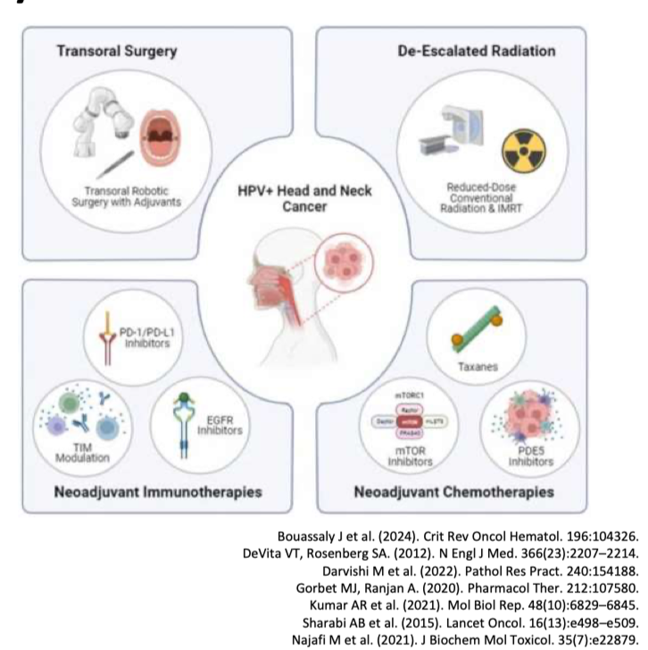
Neoadjuvant = treatment given before the main surgery/radiation to shrink the tumor first (think “neo” = new beginning, given before the definitive treatment). Adjuvant = treatment given after the main surgery to mop up any leftover microscopic cancer cells and reduce recurrence risk (think “adjunct” = added on). Both terms come up constantly in oncology notes.
Surgery Overview
Goals of Cancer Surgery
- Diagnosis: Biopsy to confirm what the tumor is
- Staging: Determine how far it has spread (e.g., sentinel lymph node biopsy)
- Curative resection: Removing the entire tumor with clear margins
- Palliation: Reducing tumor burden to relieve symptoms (when cure isn't possible)
Examples by Cancer Type
- Breast: Lumpectomy vs. mastectomy ± sentinel lymph node biopsy
- Colorectal: Segmental resection with lymphadenectomy
- Head & Neck: Wide local excision ± neck dissection → major oral implications (this is where you come in as a dentist)
Head and neck surgery directly affects the structures you work with daily: tongue (glossectomy affects speech, swallowing, prosthetic retention), mandible (marginal or segmental mandibulectomy changes occlusion and prosthetic planning), maxilla (maxillectomy creates oral-nasal communication requiring obturator prostheses), and neck dissection can damage cranial nerve XI causing shoulder dysfunction.
Radiotherapy (RT) Basics
How It Works
Ionizing radiation damages DNA in cells. Cancer cells divide rapidly and have impaired DNA repair mechanisms, so they're more vulnerable than normal cells. Radiation is delivered in small daily doses called fractions to allow normal tissue to recover between treatments.
Common Modalities
- External Beam (EBRT): Most common. A machine aims radiation at the tumor from outside the body. IMRT (Intensity-Modulated RT) is a refined form that shapes the beam to spare normal tissues
- Brachytherapy: A radioactive source is placed inside or next to the tumor. Delivers high local dose with less damage to surrounding tissue
- Proton Therapy: Uses protons instead of X-rays. Key advantage: precise dose deposition with less “exit dose” to surrounding tissue
- Stereotactic Radiosurgery (SRS) / Gamma Knife: Single high-dose fraction for intracranial targets. No oral implications
- Total Body Irradiation (TBI): Used before bone marrow transplant (myeloablative conditioning). Affects all oral tissues
- Curative dose for H&N cancer: 66–70 Gy over 6–7 weeks
- ≥50 Gy to mandible = lifelong osteoradionecrosis (ORN) risk. This never goes away. Ever.
- >26 Gy mean dose to parotid = permanent xerostomia → rampant caries for life
- Pre-RT dental clearance is MANDATORY — extractions must be done before RT, not after (post-RT extractions risk ORN)
Radiation permanently damages the blood vessels in bone (making it hypovascular), kills the bone-forming cells (making it hypocellular), and reduces oxygen supply (making it hypoxic). This “3 H's” of irradiated bone means the jaw can no longer heal normally. If you extract a tooth and create a wound in this compromised bone, it may never heal — that's osteoradionecrosis (ORN). This is why you extract hopeless teeth before radiation starts, and after radiation you do everything possible to avoid extractions.
Conditioning Chemotherapy (Liquid Tumors)
Conditioning chemotherapy is given before a hematopoietic stem cell transplant (HSCT). Its purpose is threefold:
- Eradicate malignant cells (kill the cancer)
- Suppress the recipient's immune system (prevent rejection of donor cells)
- Create “space” in the bone marrow for donor cells to engraft
Conditioning usually runs from Day −7 to Day −2. The transplant itself (infusion of donor cells) happens on Day 0.
Three Intensity Levels
| Intensity | What It Does | Examples | Used For |
|---|---|---|---|
| Myeloablative (MA) | Completely destroys all bone marrow. Causes irreversible pancytopenia. Patient cannot survive without stem cell rescue. | High-dose TBI (≥8 Gy), busulfan + cyclophosphamide | Younger, fit patients with AML, ALL, CML, MDS |
| Reduced-Intensity (RIC) | Intermediate intensity. Balances tumor kill with reduced toxicity. | Fludarabine + melphalan, fludarabine + busulfan (lower doses) | When full MA would be too toxic but you still need significant disease control |
| Non-Myeloablative (NMA) | Minimal direct tumor kill. Relies on graft-versus-tumor effect (the donor's immune cells will attack the cancer). | Low-dose TBI (≤2 Gy) + fludarabine | Older or unfit patients, lymphomas, multiple myeloma |
Think of it like renovating a house. Myeloablative = demolish the entire house to the foundation and rebuild from scratch. The old structure is completely gone, and the new house (donor marrow) is the only thing that can make it livable again. Non-myeloablative = move new tenants (donor cells) into the house while some of the old tenants (patient's marrow) are still there, and rely on the new tenants to gradually push the old ones out. RIC is somewhere in between — you knock out most of the structure but not all of it.
Induction Chemotherapy (Solid Tumors)
Induction chemotherapy is chemo given before definitive surgery or radiation. This is different from conditioning chemo (which prepares for transplant). Induction chemo is used for solid tumors, especially head and neck cancer.
Why Give Chemo First?
- Reduce tumor size (cytoreduction) — makes surgery easier
- Improve local control — kills cancer cells at the primary site
- Eradicate micrometastatic disease — kills tiny deposits of cancer that have already spread but are too small to see
- Enable organ preservation — especially important for the larynx (preserving the voice box)
- Better drug delivery — blood vessels are still intact before surgery/radiation damages them
Head & Neck Application
- Preferred regimen: TPF — Docetaxel + Cisplatin + 5-FU
- Given for locally advanced disease (Stage III–IVA)
- Followed by chemoradiation or surgery
- Controversy: Not universally superior to concurrent chemoradiation alone. Best reserved for patients seeking organ preservation, high risk of distant metastases, or rapidly growing symptomatic tumors
HLA Matching Principles
What is HLA?
Human Leukocyte Antigen (HLA) = proteins on the surface of your cells that help your immune system distinguish “self” from “non-self.” You inherit one set from each parent. These proteins are encoded by genes on chromosome 6.
When you transplant bone marrow from a donor, the donor's T cells look at the recipient's HLA proteins. If those proteins don't match what the donor's T cells recognize as “self,” the donor T cells will attack the recipient's body — this is Graft-versus-Host Disease (GVHD).
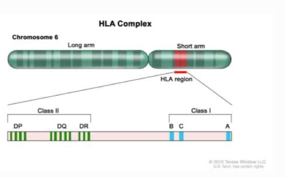
The Matching Goal
8/8 match at four key genes: HLA-A, HLA-B, HLA-C, HLA-DRB1. Each mismatch increases GVHD risk and mortality.
Donor Options (Best to Most Available)
- Matched Sibling: Best match, lowest GVHD risk. Only a 25% chance any given sibling is a full match
- Matched Unrelated Donor (MUD): 8/8 match found through a registry (Be The Match). Larger pool but slightly higher GVHD risk than sibling
- Haploidentical: Half-matched family member (parent, child, or sibling). Always available (everyone has a haploidentical relative), but higher GVHD risk. Requires additional GVHD prophylaxis (post-transplant cyclophosphamide)
Immunotherapy Overview
Immunotherapy harnesses your own immune system to recognize and attack cancer cells. Unlike chemo (which poisons all rapidly dividing cells), immunotherapy makes the immune system smarter and removes the “brakes” that cancer uses to hide.
Major Categories
| Type | How It Works | Examples | Plain English |
|---|---|---|---|
| Checkpoint Inhibitors | Block “brake” proteins on T-cells (PD-1, PD-L1, CTLA-4) → immune activation against cancer | Pembrolizumab, Nivolumab, Ipilimumab | Cancer cells put up “don't eat me” signs. Checkpoint inhibitors tear those signs down so T-cells can see and attack the cancer. |
| CAR-T Cell Therapy | Patient's own T-cells are removed, genetically engineered to target tumor antigens, multiplied in a lab, and infused back | Axicabtagene ciloleucel, Tisagenlecleucel | Take the patient's immune soldiers, give them GPS coordinates for the cancer, train millions of them, and send them back in. |
| Bispecific Antibodies | Engineered proteins that grab a T-cell with one arm and a tumor cell with the other, forcing them together | Blinatumomab, Teclistamab | A molecular handcuff that physically connects a killer T-cell to a cancer cell so the T-cell can't miss. |
| Monoclonal Antibodies | Lab-made antibodies that target specific proteins on tumor surfaces; may recruit immune cells or block growth signals | Rituximab (CD20), Trastuzumab (HER2) | Precision-guided missiles that stick to a specific target on the cancer cell's surface. |
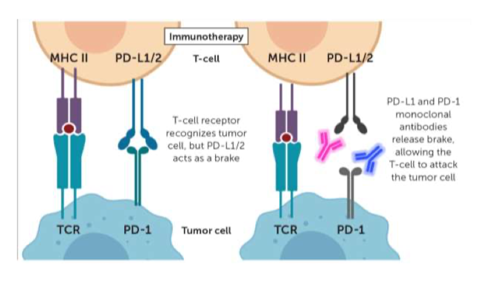
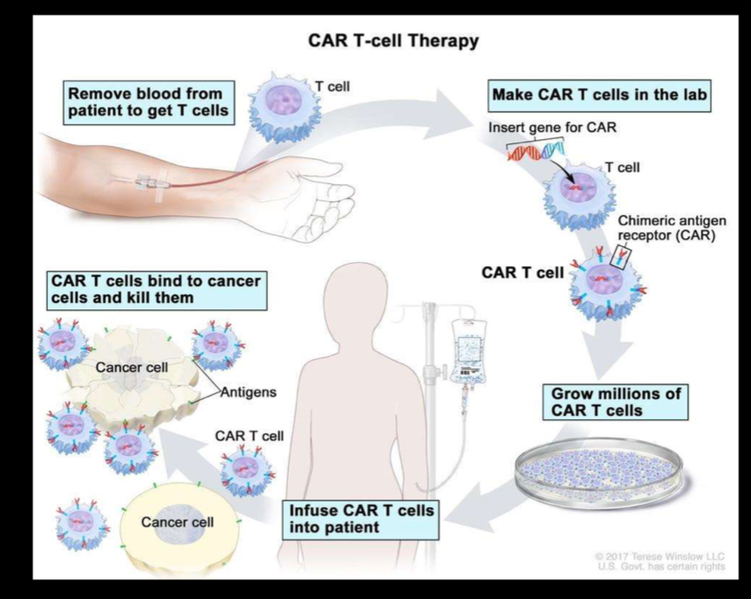
Normally, T-cells patrol the body looking for abnormal cells to kill. T-cells have a receptor called PD-1 that acts as an “off switch.” When PD-1 binds to its partner PD-L1 on another cell, the T-cell stands down. Cancer cells exploit this by covering themselves in PD-L1 — basically holding up a “we're normal, move along” badge. Checkpoint inhibitors like pembrolizumab (the drug our clinical vignette patient is on) block PD-1, so the T-cell's off switch can't be triggered. The T-cell stays active and kills the cancer. The downside: the T-cells may also attack normal tissues — that's what causes irAEs (immune-related adverse events).
Targeted Therapy Overview
Unlike traditional chemotherapy (which kills all rapidly dividing cells, cancerous or not), targeted therapy blocks specific molecular targets driving cancer growth. This means fewer side effects on normal cells — but only works if the cancer has the specific target.
Major Categories
| Type | Mechanism | Examples |
|---|---|---|
| Tyrosine Kinase Inhibitors (TKIs) | Small molecules that enter cells and block intracellular signaling kinases that drive growth | Imatinib (BCR-ABL in CML), Osimertinib (EGFR in lung cancer), Alectinib (ALK in lung cancer) |
| Monoclonal Antibodies | Large proteins that bind extracellular receptors/ligands on cell surface, blocking growth signals | Trastuzumab (HER2 in breast), Cetuximab (EGFR in H&N/colorectal), Bevacizumab (VEGF — starves tumor blood supply) |
| Antibody-Drug Conjugates (ADCs) | Antibody acts as a guided delivery vehicle, carrying a cytotoxic drug payload directly to the tumor cell. The antibody finds the target, binds, gets internalized, and releases the poison inside the cancer cell | Trastuzumab deruxtecan (T-DXd) for HER2+ breast cancer |
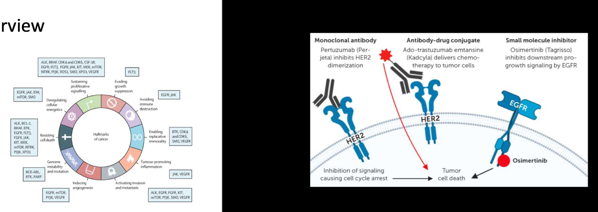
Think of a cancer cell as a house on fire. TKIs are small enough to enter through the door and cut the wires fueling the fire from inside (intracellular). Monoclonal antibodies are too large to enter the house, so they stand outside and block the gas line feeding the fire (extracellular). ADCs are a monoclonal antibody carrying a bomb — they find the house, knock on the door, get let in, and then detonate the payload inside.
Acute Sequelae of Cancer Care
The side effects that occur during or shortly after treatment. These are the complications you may see in a patient who walks into your operatory mid-treatment or shortly after.
Chemotherapy Side Effects Timeline
Chemo side effects follow a predictable timeline. Understanding this timeline tells you when a patient is most dangerous to treat dentally.
| Time After Infusion | What Happens | Key Details |
|---|---|---|
| Day 1–2 (During/Right After) |
Immediate reactions | Nausea/vomiting, infusion reactions (flushing, rash, chest tightness), acute neuropathy (cold-triggered symptoms — common with oxaliplatin) |
| Days 2–7 (First Week) |
Delayed symptoms | Delayed nausea/vomiting, fatigue, constipation, decreased appetite, diarrhea (peaks at week 2, then improves) |
| Days 7–14 (Nadir Period) |
Bone marrow suppression reaches lowest point | Oral mucositis appears. Neutropenia with risk of febrile neutropenia. This is the most dangerous period for dental treatment. |
| Days 14–21+ (Recovery) |
Bone marrow recovering | Neutrophil recovery, mucositis resolution |
| Weeks 2–3 | Hair loss (alopecia) | Visible but not dentally relevant |
| Cumulative / Ongoing | Builds over multiple cycles | Peripheral neuropathy (numbness/tingling in hands/feet), persistent fatigue |
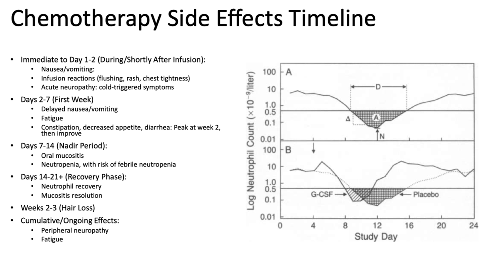
“Nadir” means the lowest point. In oncology, it refers to when blood counts (especially neutrophils) hit their lowest level after a chemo cycle. This typically occurs 7–14 days after infusion. During the nadir, patients are profoundly immunosuppressed and at highest risk for infection. Never do elective dental work during the nadir. If a patient needs dental treatment between cycles, time it when counts have recovered (typically check ANC > 1000 and platelets > 50,000).
The Sonis Pathophysiology of Mucositis
Dr. Stephen Sonis described a 5-phase model explaining why and how oral mucositis develops. This isn't just theoretical — understanding the mechanism explains why specific treatments work.
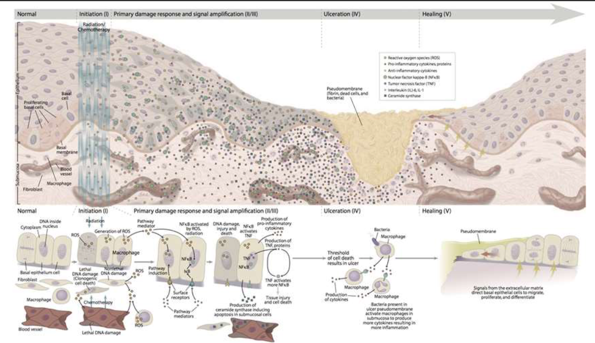
-
Initiation
Chemotherapy or radiation causes direct DNA damage to the mucosal epithelial cells lining the mouth. This is the initial insult.
-
Primary Damage Response
The DNA damage generates reactive oxygen species (ROS) — toxic molecules that cause further cell injury. ROS activate NF-κB, a “master alarm switch” inside cells, which triggers production of pro-inflammatory cytokines: TNF-α, IL-1β, IL-6.
-
Signal Amplification
Those cytokines recruit more inflammatory cells, which produce more ROS, which activate more NF-κB, which produces more cytokines. This creates a positive feedback loop — a vicious cycle that amplifies the damage far beyond what chemo/radiation alone caused.
-
Ulceration
The mucosal lining breaks down completely. Open ulcers form. Bacteria from the oral cavity colonize these ulcers, activating macrophages in the submucosa and driving even more inflammation. Peak: Days 7–10 post-conditioning.
-
Healing
Signals from the extracellular matrix direct basal epithelial cells to migrate, proliferate, and differentiate, rebuilding the mucosal barrier. Resolves with engraftment (in HSCT patients) or end of treatment cycle.
Palifermin (keratinocyte growth factor): Works at Phase 1 and 5 — stimulates epithelial cell proliferation to thicken the mucosal barrier before damage occurs and accelerate healing after. Also scavenges ROS (Phase 2).
Oral cryotherapy (ice chips during chemo infusion): Works by causing vasoconstriction in oral tissues, reducing blood flow to the mucosa during infusion, which means less chemotherapy drug gets delivered to oral tissue. Simple, cheap, and effective.
Management of Oral Mucositis
WHO Oral Toxicity Scale
Grade 1
Soreness ± erythema. Patient can eat and drink normally.Grade 2
Erythema + ulcers present. Patient can still swallow solid food.Grade 3
Ulcers with extensive erythema. Patient cannot swallow solid food.Grade 4
Mucositis so severe that oral alimentation is not possible. May need IV nutrition / feeding tube.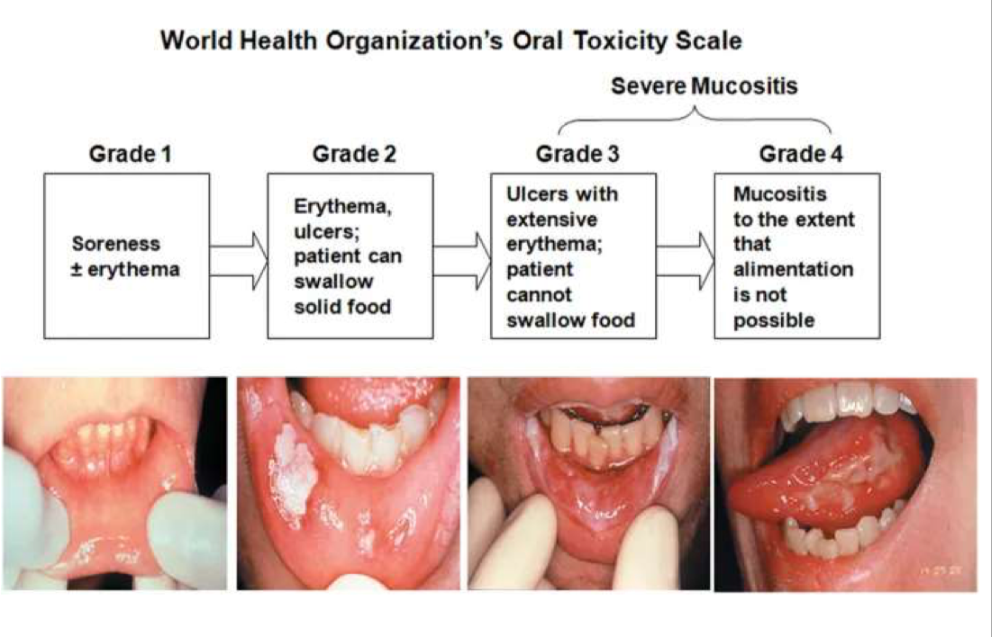
Prevention
- Photobiomodulation (PBM): Low-level laser therapy — reduces inflammation and promotes healing
- Oral cryotherapy: Ice chips during chemo infusion to reduce drug delivery to oral tissue
- Benzydamine 0.15% oral rinse: A topical NSAID + anesthetic. Rinse 15 mL for 2 minutes, 4–8x/day during RT or XRT
- Oral glutamine: A conditionally essential amino acid. 5–16 g soak and swallow BID–QID
- Palifermin (Keratin Growth Factor): Stimulates epithelial proliferation
Treatment / Symptom Management
- Basic oral care: Soft toothbrush, floss, bland rinses (saline / sodium bicarbonate). Avoid alcohol-based products and mint
- Important: Avoid brushing and flossing during severe thrombocytopenia with active bleeding
- Topical anesthetics: Viscous lidocaine, Magic Mouthwash (MMW)
- Topical morphine 0.2%: Especially helpful for H&N XRT patients
- Systemic analgesics: Opioids often required for Grade 3–4 mucositis
- Nutritional support: Dietary modifications; feeding tube if intake <60% for >10 days or Grade 3+ mucositis
HSCT Infection Timeline
After a stem cell transplant, the patient's immune system is completely rebuilt from scratch. Different types of infections predominate at different time periods, based on which components of the immune system have recovered.
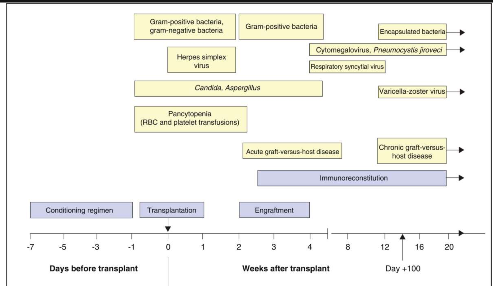
| Period | Immune Defect | Main Pathogens | Details |
|---|---|---|---|
| Days 0–30 (Pre-engraftment) |
Neutropenia (no neutrophils) | Bacteria (gram+, gram−) + Candida | Also HSV reactivation, Aspergillus. Pancytopenia requiring RBC/platelet transfusions. |
| 1–6 months (Post-engraftment) |
T-cell dysfunction (T-cells haven't fully recovered) | CMV (cytomegalovirus), PJP (Pneumocystis jirovecii) | Also respiratory syncytial virus. Acute GVHD typically occurs here. Immunoreconstitution ongoing. |
| >6 months (Late/Chronic) |
Humoral dysfunction (B-cells and antibodies still impaired, especially with chronic GVHD) | Encapsulated bacteria (Strep pneumo, H. flu, Neisseria), VZV | Chronic GVHD begins here. Patients may be on prolonged immunosuppression. |
Immunosuppression to Prevent GVHD
Graft-versus-Host Disease (GVHD) is when the donor's immune cells (the “graft”) attack the recipient's body (the “host”). It's one of the most common and serious complications of allogeneic (donor) stem cell transplant.
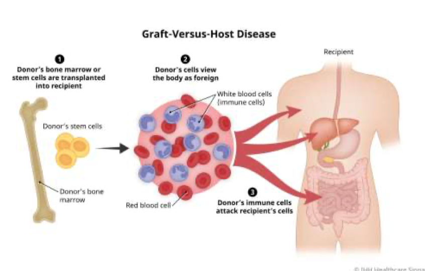
Prophylaxis Regimen
GVHD prevention starts before the transplant and continues for months:
- Calcineurin inhibitor (tacrolimus or cyclosporine): Started Day −3 or Day −1
- Methotrexate OR mycophenolate mofetil: Given on Days +1, +3, +6, and +11
- Post-transplantation cyclophosphamide: Days +3, +4 — used specifically for haploidentical or mismatched donors
Immunosuppression is gradually tapered and discontinued over 6–12 months if no GVHD develops.
Mucositis vs. Oral aGVHD vs. Graft Rejection
These three conditions can all present with oral symptoms after transplant. Distinguishing them is critical because the treatment is completely different for each.
| Feature | Mucositis | Oral Acute GVHD | Graft Rejection |
|---|---|---|---|
| Timing | Day +7–14, resolves ~Day +21 | Day +20 onward, often at immunosuppression taper | Day +14–21 (primary); later with secondary rejection |
| Mechanism | Direct cytotoxic damage from conditioning chemo/radiation | Donor T-cells attacking host tissues | Host immune reconstitution destroying donor graft |
| Systemic Signs | GI mucositis, nausea, diarrhea, pain. Profoundly unwell but on a predictable trajectory | Skin rash (often first sign), jaundice, high-volume diarrhea, oral pain. Multi-organ involvement | Fever, pancytopenia, failure to engraft. Patient deteriorates after a period of improvement |
| Severity Trajectory | Peaks then resolves with engraftment | Progressive if untreated; can be life-threatening | Medical emergency — requires urgent salvage conditioning or second transplant |
| Lab Findings | Nadir of CBC tracks with symptom peak | Rising bilirubin, abnormal LFTs, skin biopsy, clinical staging | Falling donor chimerism on molecular testing, return of recipient hematopoiesis |
| Treatment | Supportive (pain, nutrition, infection prevention) | Increase immunosuppression — systemic corticosteroids first-line | Urgent hematology intervention — salvage chemo, DLI, or re-transplant |
| Oral Findings | Diffuse erythema, pseudomembranous ulceration of nonkeratinized mucosa | Erythema, lichenoid changes, ulceration; hyposalivation (more robust in cGVHD) | Indirect — opportunistic infection, bleeding from thrombocytopenia |
Timing is your best clue. Mucositis shows up early (week 1–2), peaks, then gets better as the new marrow engrafts. GVHD shows up later (Day 20+, often when doctors start reducing immunosuppression) and keeps getting worse unless you increase immunosuppression. Graft rejection is the scariest — the patient initially seems to be engrafting, then suddenly deteriorates because their own immune system rejected the donor cells.
≤6 Months Post-Transplant = Highest Risk
During the first 6 months after transplant, the patient is maximally immunosuppressed. For dental management:
- Defer all routine dental care — emergency treatment only
- Infection is the dominant risk — not bleeding, not pain, infection
- Classic signs of infection may be absent: Without functioning neutrophils, you may see no swelling, no erythema, and no purulence even with raging infection
For elective dental work after HSCT: ANC > 1000 and platelets > 50,000, ideally after Day +100. Always coordinate with the transplant team. If in doubt, wait.
Post-Transplant Lymphoproliferative Disorder (PTLD)
PTLD is an abnormal overgrowth of lymphocytes that occurs after transplant. It's essentially a lymphoma that develops because the immune system is too suppressed to keep EBV (Epstein-Barr virus) in check.
- Oral manifestations: Tonsillar enlargement, gingival ulcers or necrosis, oral mucosal masses
- Timing: First year post-transplant (usually first 2–3 months)
- Almost 100% EBV-associated in alloHSCT (the EBV comes from donor lymphocytes)
- Occurs in 1–20% of alloHSCT, depending on HLA matching and T-cell depletion
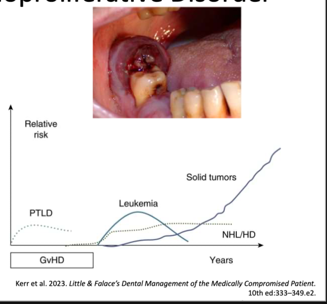
If you see a post-transplant patient with rapidly growing tonsillar or gingival masses, think PTLD. This is not a routine oral finding — urgent referral to the transplant team is required.
Immune-Related Adverse Events (irAEs)
Remember how checkpoint inhibitors work by “removing the brakes” on the immune system? The problem: an unleashed immune system doesn't only attack cancer. It can also attack any normal tissue in the body. These autoimmune-like side effects are called irAEs.
- Usually occur within the first 3 months of treatment
- Can affect virtually any organ system: skin (rash, vitiligo, SJS), GI (colitis, hepatitis), endocrine (thyroiditis, adrenalitis, autoimmune diabetes), pulmonary (pneumonitis), cardiac (myocarditis), neurologic (encephalitis, neuropathy), musculoskeletal (arthritis, myositis), renal (nephritis), hematologic (cytopenias), and oral
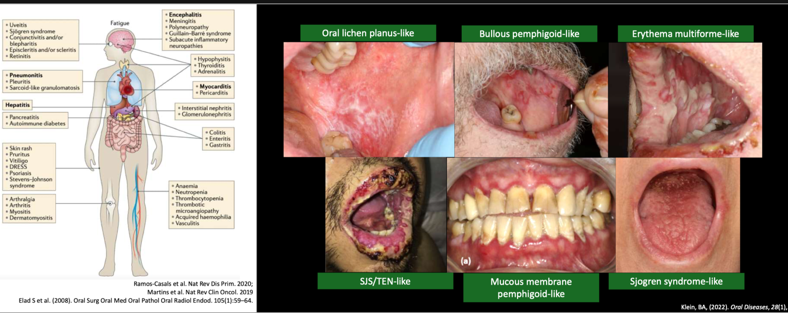
Here's something counterintuitive: patients who develop irAEs (especially chronic ones) actually tend to have better cancer outcomes. Data shows chronic irAE patients have ~95% relapse-free survival at 30 months vs. ~55% without chronic irAEs. Why? The same immune hyperactivation that attacks normal tissues is also attacking the cancer more aggressively. So irAEs, while painful and dangerous, can actually be a sign that the immunotherapy is working well.
Cutaneous irAE Timeline
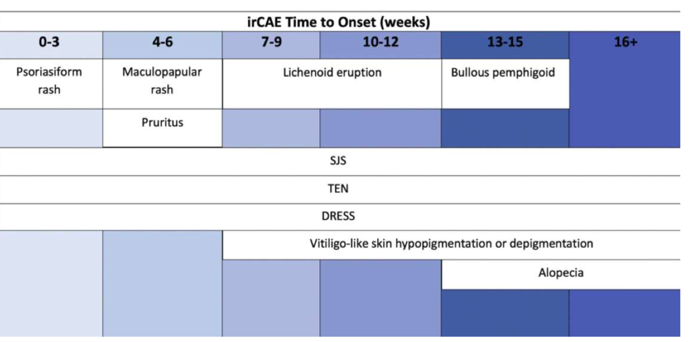
| Weeks 0–3 | Weeks 4–6 | Weeks 7–12 | Weeks 10–15 | Weeks 13+ |
|---|---|---|---|---|
| Psoriasiform rash | Maculopapular rash, Pruritus | Lichenoid eruption, SJS, TEN, DRESS | Bullous pemphigoid, Vitiligo-like changes | Alopecia |
Oral irAE Management
Oral Mucosal irAEs
These look like autoimmune diseases you already know — because immunologically, they are autoimmune diseases triggered by the drug:
- OLP-like: White reticulations, erosions, ulcers (looks like oral lichen planus)
- MMP/BP-like: Vesicles, bullae, ulcers, erosions (looks like mucous membrane pemphigoid or bullous pemphigoid)
- EM-like: Irregular ulcerations, erosions, hemorrhagic crusting of the lips (looks like erythema multiforme)
- SJS/TEN-like, Sjogren syndrome-like
Diagnostic workup: History and physical (ask about skin, ocular, genital involvement), rule out other etiologies, clinical photos, biopsy with DIF in addition to H&E.
| Grade | Presentation | Management |
|---|---|---|
| G1 | Asymptomatic or mildly symptomatic | Topical steroid solution (dexamethasone 0.5 mg/5 mL) and/or gel (fluocinonide 0.05%). Consider tacrolimus 0.1% ointment for lip vermilion. |
| G2 | Moderately painful lesions that do not interfere with oral intake | Consider holding ICI (in consultation with oncologist). Consider oral prednisone 1 mg/kg in addition to topical steroids/tacrolimus. |
| G3 | Severely painful lesions limiting oral intake | Hold ICI. Super high-potency topical steroid (clobetasol 0.05% solution/gel). Oral prednisone 1–2 mg/kg or steroid-sparing systemic medication if topical inadequate. |
| G4 | Severely painful, unmanaged with prior interventions, oral alimentation impossible | Hold ICI, consider permanently discontinuing. Oral or IV (methyl)prednisolone 1–2 mg/kg + steroid-sparing treatment. Continue topical regimen. |
Salivary irAEs
Presents as xerostomia, hyposalivation, and systemic features of Sjogren syndrome (fatigue, arthralgias).
Workup: Whole unstimulated saliva flow (WUSF), consider minor salivary gland biopsy, labs (ANA, anti-Ro, anti-La, RF).
| Grade | Presentation | Management |
|---|---|---|
| G1 | Xerostomia without significant dietary change; WUSF >0.1 mL/min | OTC dry mouth products, adequate hydration. Consider sialagogue (pilocarpine 5 mg TID or cevimeline 30 mg TID). |
| G2 | Diet limited to soft/moist foods; WUSF <0.1 mL/min; mild systemic SS features | Consider holding ICI. Sialagogue, topical fluoride supplementation. Consider prednisone 1 mg/kg or hydroxychloroquine. Refer to rheumatology. |
| G3 | Unable to aliment orally; WUSF <0.1 mL/min; systemic SS affecting ADLs | Hold ICI. Systemic prednisone 1–2 mg/kg or hydroxychloroquine. Co-manage with rheumatologist. |
Long-term Sequelae of Cancer Care
The complications that persist months to years after treatment ends. As cancer survival improves, these long-term effects become increasingly important to manage — and many fall squarely in the dentist's domain.
Cancer Survivorship
The bottom line: you will see cancer survivors in your practice. With 1 in 18 Americans being a cancer survivor (and rising), understanding long-term sequelae is not optional — it's a core competency.
Long-term Sequelae Overview (Adults)
Neurologic & Psychologic: Chronic pain, chemotherapy-induced peripheral neuropathy (CIPN), ototoxicity, dysgeusia (taste changes), “chemo brain” (cognitive impairment), depression, anxiety, PTSD
Lymphatic: Lymphedema
Cardiovascular: Cardiotoxicity (from anthracyclines like doxorubicin)
Musculoskeletal: ORN, fibrosis, fatigue, OSA
Gastrointestinal: Dysphagia, hyposalivation
Immune: Chronic GVHD, irAEs
Long-term Sequelae (Pediatric Cancer Survivors)
Children treated for cancer face unique long-term effects because treatment hits developing organs:
- General: Delayed growth, delayed vaccination, educational delays, mental health burden
- Oral: Dental developmental abnormalities, osteoradionecrosis
- Endocrine: Growth hormone deficiency, hypothyroidism, thyroid cancer, adrenal insufficiency, precocious puberty
- Cardiac, GI, Immune, Musculoskeletal, Neurological, Reproductive, Sensory
- Subsequent neoplasms: Breast cancer, colorectal cancer, skin cancer (treatment itself can cause new cancers)
Second Primary Malignancy
Cancer treatment itself can cause new, unrelated cancers years later:
- Radiation therapy → Leukemia (AML, CML, CLL, MDS), thyroid cancer, breast cancer (from chest RT for Hodgkin's), lung cancer, soft tissue sarcomas, bone cancer, GI cancers
- Chemotherapy → Leukemia from alkylating agents (cyclophosphamide, busulfan, melphalan), platinum drugs (cisplatin, carboplatin), and topoisomerase II inhibitors (etoposide)
- Targeted therapy → Cutaneous SCC (from vemurafenib and dabrafenib, both BRAF inhibitors)
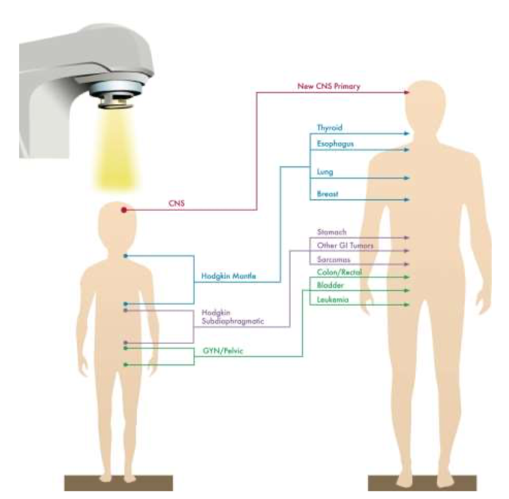
Oral Chronic GVHD (cGVHD)
Chronic GVHD is the long-term form of graft-versus-host disease, occurring >100 days post-transplant. Up to 80% of cGVHD patients have oral involvement, making it one of the most common sites affected.
Oral Manifestations
- Lichenoid mucosal lesions: White striae/plaques on buccal mucosa, tongue, palate (looks exactly like oral lichen planus). Causes food sensitivity and pain
- Salivary dysfunction: Hyposalivation, xerostomia, dysphagia, difficulty eating, very high caries index (because saliva isn't protecting teeth), recurrent mucoceles
- Sclerotic changes: Uncommon but causes trismus (limited mouth opening due to fibrosis of muscles/connective tissue)
- Second primary cancer: Oral cavity SCC and cutaneous SCC — this is a real risk
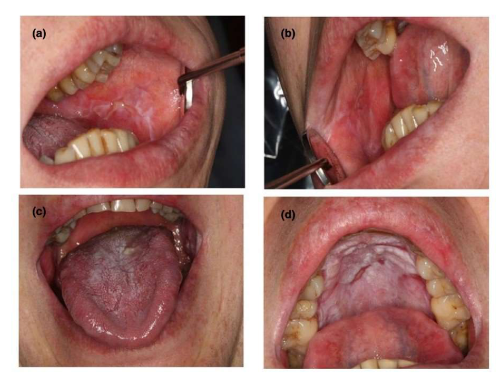
NIH Diagnostic Criteria
| Category | Findings | Diagnostic Value |
|---|---|---|
| Diagnostic | Lichen planus-like changes | Sufficient alone to establish diagnosis of oral cGVHD |
| Distinctive | Hyposalivation, superficial mucoceles, mucosal atrophy, ulcers, pseudomembranes, sclerosis | Seen in cGVHD but insufficient alone — need additional organ involvement or biopsy |
| Common | Gingivitis, mucositis, erythema, pain | Seen in both acute and chronic GVHD — not diagnostic |
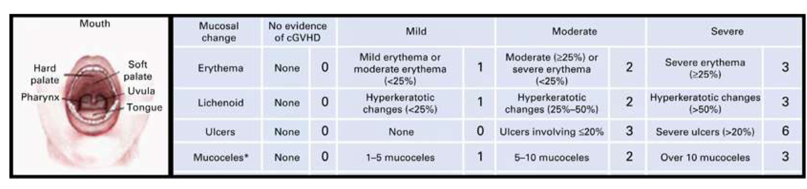
The NIH Oral Mucosal Score (NIH OMS) grades oral cGVHD from 0–15 by measuring erythema (0–3), lichenoid changes (0–3), mucoceles (0–3), and ulcers (0–6).
cGVHD Treatment
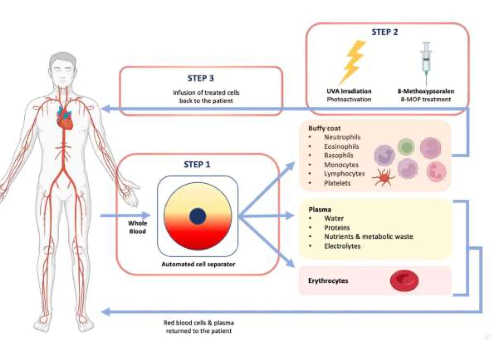
Corticosteroids are first-line (both systemic and topical). Other options: calcineurin inhibitors, mTOR inhibitors, anti-metabolites, rituximab, TKIs, and extracorporeal photopheresis (ECP) — a procedure where blood is drawn, the white blood cells are separated, treated with a photosensitizing drug + UVA light, and returned to the patient.
- cGVHD increases oral cancer risk: RR = 2.78 (95% CI 1.27–6.08)
- SIR (standardized incidence ratio) for oral cancer after alloHCT: 15.7 (95% CI 12.1–20.1) — meaning 15.7x the expected rate
- 35-year cumulative incidence of secondary oral cancer: 3.47%
- Highest risk: oral cGVHD duration ≥15 months (58.6x higher than expected), prolonged immunosuppression (especially azathioprine), severe chronic GVHD
Medication-Related Osteonecrosis of the Jaw (MRONJ)
MRONJ Staging
| Stage | Clinical Features | Management |
|---|---|---|
| At Risk | No exposed bone; patient on antiresorptive/antiangiogenic therapy | No treatment indicated. Patient education. Preventive dental care. |
| Stage 0 | No exposed bone but nonspecific symptoms (pain, fistula, altered sensation) or radiographic changes | Symptomatic management (pain meds, antibiotics if indicated). Referral to dental specialist. Address modifiable risk factors. |
| Stage 1 | Exposed/necrotic bone or fistula probing to bone; asymptomatic, no infection | Antibacterial mouth rinse (chlorhexidine). Meticulous oral hygiene. Minor debridement of sequestra. Follow-up q8 weeks. Patient education. |
| Stage 2 | Exposed/necrotic bone with pain AND infection (erythema, purulent drainage) | Antibacterial rinse + systemic antibiotics. Pain control. Conservative debridement. Infection control. |
| Stage 3 | Exposed bone with pain, infection, AND ≥1 of: extension beyond alveolar bone, pathologic fracture, extraoral fistula, oral-antral/oral-nasal communication, osteolysis to inferior mandibular border or sinus floor | Antibacterial rinse + systemic antibiotics + pain control + surgical debridement or resection. Multidisciplinary approach. |
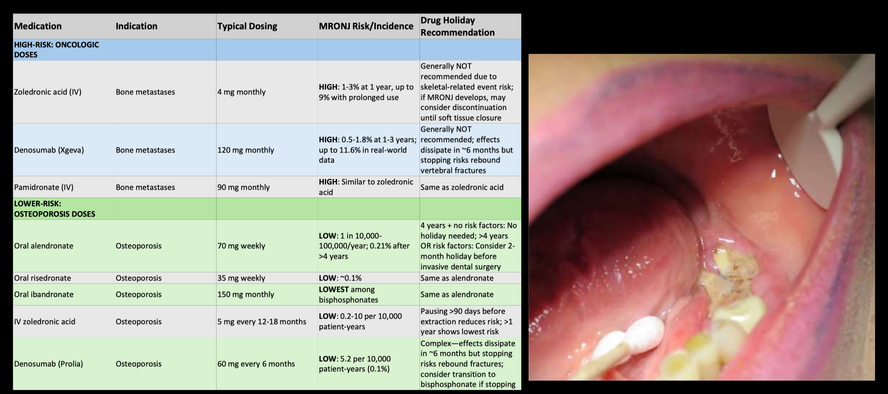
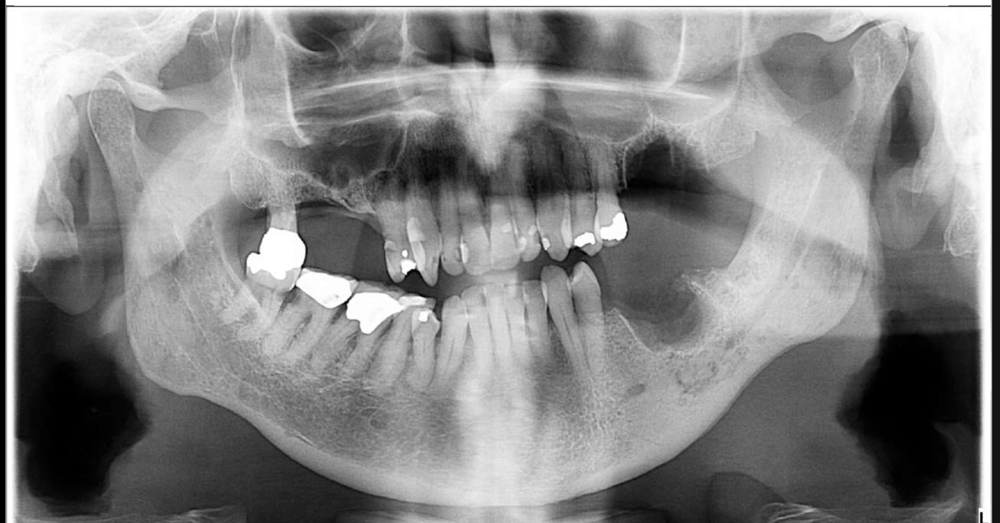
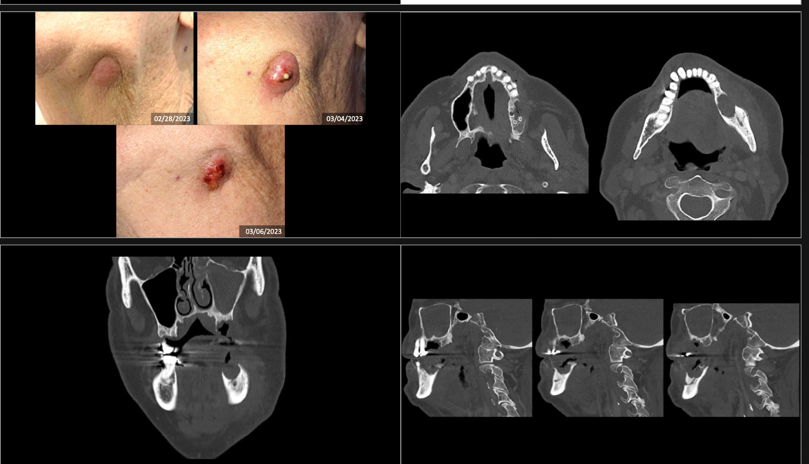
MRONJ Risk by Medication
Risk is dramatically different between oncologic doses (high-risk) and osteoporosis doses (low-risk). This distinction matters enormously for your treatment planning.
| Medication | Indication | Dose | MRONJ Risk | Drug Holiday? |
|---|---|---|---|---|
| HIGH-RISK: ONCOLOGIC DOSES | ||||
| Zoledronic acid (IV) | Bone metastases | 4 mg monthly | HIGH: 1–3% at 1 year, up to 9% with prolonged use | Generally NOT recommended (skeletal event risk). If MRONJ develops, may consider stopping until soft tissue closure. |
| Denosumab / Xgeva | Bone metastases | 120 mg monthly | HIGH: 0.5–1.8% at 1–3 years; up to 11.6% in real-world data | Generally NOT recommended. Effects dissipate in ~6 months but stopping risks rebound vertebral fractures. |
| Pamidronate (IV) | Bone metastases | 90 mg monthly | HIGH: Similar to zoledronic acid | Same as zoledronic acid |
| LOWER-RISK: OSTEOPOROSIS DOSES | ||||
| Oral alendronate | Osteoporosis | 70 mg weekly | LOW: 1 in 10,000–100,000/year; 0.21% after >4 years | 4 years + no risk factors: no holiday needed. >4 years OR risk factors: consider 2-month holiday before invasive dental surgery. |
| Oral risedronate | Osteoporosis | 35 mg weekly | LOWEST among bisphosphonates (~0.1%) | Same as alendronate |
| Oral ibandronate | Osteoporosis | 150 mg monthly | Same as alendronate | Same as alendronate |
| IV zoledronic acid | Osteoporosis | 5 mg q12–18 months | LOW: 0.2–10 per 10,000 patient-years | Pausing >90 days before extraction reduces risk; >1 year shows lowest risk |
| Denosumab / Prolia | Osteoporosis | 60 mg q6 months | LOW: 5.2 per 10,000 patient-years (0.1%) | Complex — effects dissipate in ~6 months but stopping risks rebound vertebral fractures. Consider transitioning to bisphosphonate if stopping. |
The same drug at oncologic doses (monthly IV for bone metastases) is dramatically more dangerous than at osteoporosis doses (oral weekly/yearly IV for bone density). A patient on alendronate 70 mg weekly for osteoporosis has a 1-in-10,000 yearly risk of MRONJ — that's very low. A patient on zoledronic acid 4 mg monthly for bone metastases has up to a 9% risk — that's nearly 1 in 10. Always ask which indication the medication is for, not just the drug name.
Osteoradionecrosis (ORN)
ORN is an area of exposed, devitalized, irradiated bone that fails to heal over a period of ≥3 months in the absence of local neoplastic disease (you must rule out cancer recurrence).
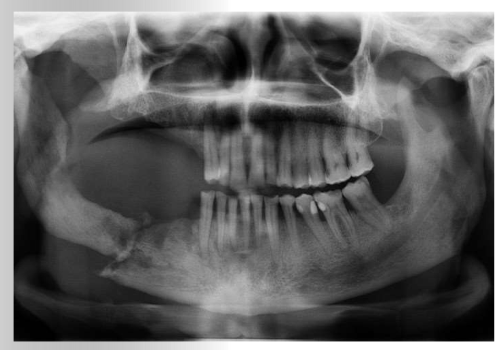
- The bone is hypoxic, hypovascular, hypocellular (the “3 H's”)
- Fibroatrophy: Progressive fibrotic replacement of normal bone and vascular tissue
- Incidence: Was ~20% historically; now approximately 5% with modern IMRT techniques
ORN Management Recommendations
- Do NOT recommend hyperbaric oxygen (HBO) prior to extractions or for treatment of ORN. The evidence does not support it.
- DO recommend: Minimally traumatic extractions (when absolutely necessary), chlorhexidine rinses, and antibiotics (pre- and post-extraction). Pentoxifylline 400 mg BID + tocopherol (vitamin E) 1000 IU daily for treatment.
Lymphedema & Fibrosis
Lymphedema
- Pathologic accumulation of interstitial fluid (the lymphatic drainage system is damaged)
- Caused by surgery and/or RT
- 67% of HNC survivors
- Decreased range of motion, hearing loss, decreased quality of life, social anxiety
- Treatment: Lymphatic drainage massage, compression sleeves/garments
Fibrosis
- Overaccumulation of fibrotic (scar) tissue in treated area
- Caused by surgery and/or RT
- 74% of HNC survivors
- Firm to touch, “woody” texture, swelling absent. Causes profound trismus
- Can worsen for years after treatment ends → late dysphagia, tracheal stenosis, abnormal posture
- Treatment: Early intervention with stretching exercises
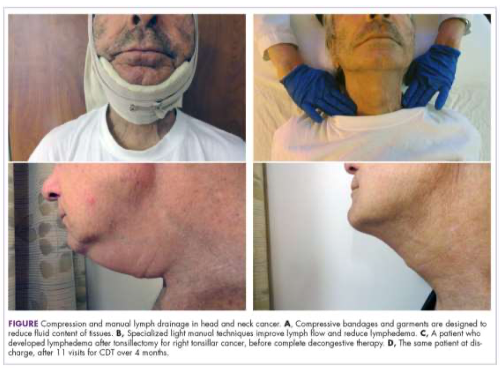
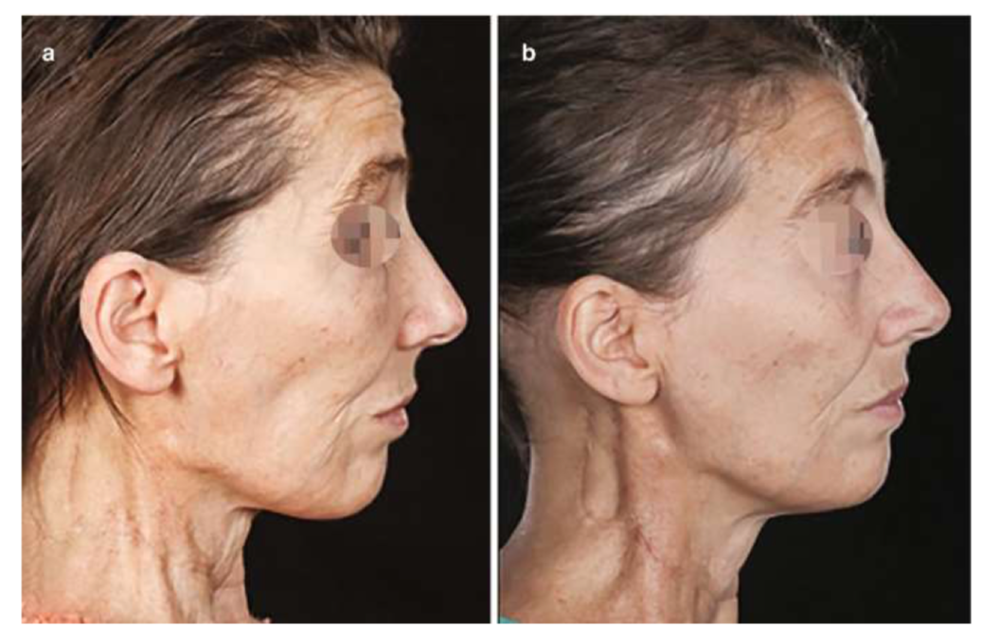
Fibrosis-induced trismus is one of the most practically challenging findings you'll encounter. A patient who can only open 15–20mm makes comprehensive dental work extremely difficult. This is why early stretching exercises (TheraBite, tongue depressor stacking) are critical — fibrosis is much harder to reverse than prevent.
Dysphagia & OSA
Dysphagia (Difficulty Swallowing)
- Swallowing is a complex sensory-motor function; the tongue base is critical
- Risks: Aspiration pneumonia, malnutrition, dehydration, choking, psychosocial impact
- May need gastrostomy (PEG tube — preferred over nasogastric tube for long-term feeding)
- Treatment: Food thickeners, swallowing exercises, dilation or Botox for strictures
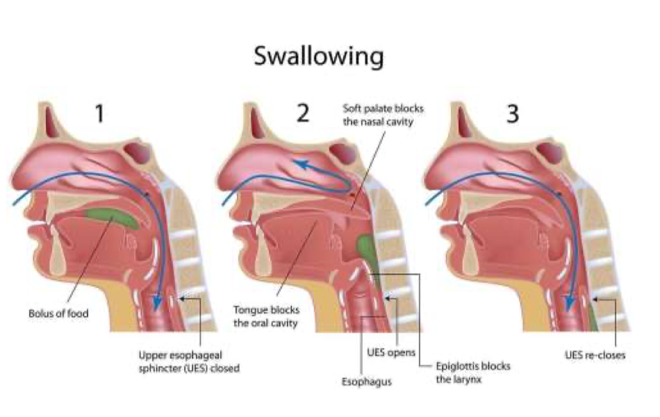
In a cancer survivor, sudden onset dysphagia = new or recurrent disease until proven otherwise. Do not assume it's just a progression of treatment effects. Urgent referral is needed.
OSA Following Head & Neck Cancer
- 40% of HNC patients vs. 11% of general population — nearly 4x the rate
- Causes: Persistent tongue/laryngeal swelling from chemo/RT, restricted neck motion from RT fibrosis, surgical reconstruction causing obstruction
- Chronic fatigue and poor sleep quality → screen for OSA
- Treatment: CPAP, behavioral therapy, weight loss
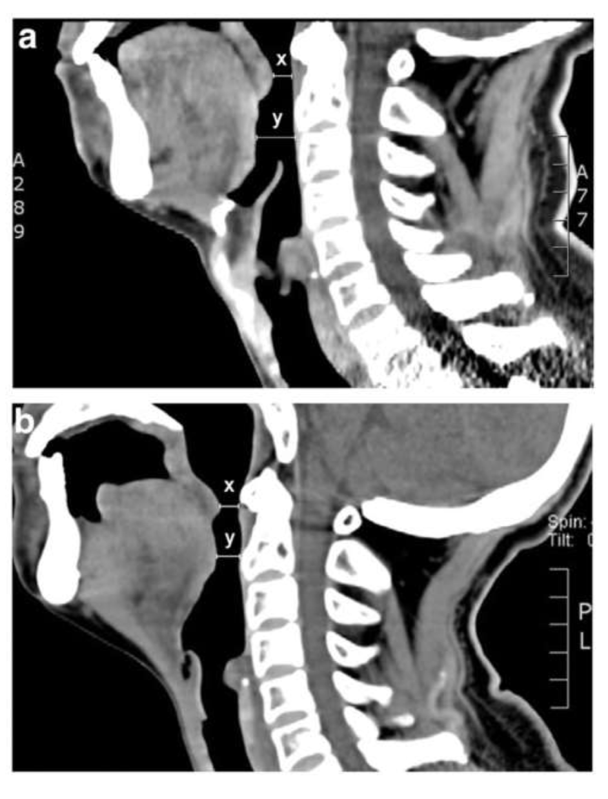
Chronic Pain in Cancer Survivors
- 20–40% of all cancer survivors have chronic pain (up to 50% in HNC)
- Can be related to the tumor itself or to treatment
- Underdiagnosed and poorly managed
- Requires multimodal management
- Causes unemployment and reduced working hours >5 years after diagnosis
Chronic Pain in HNC Specifically
- High incidence that increases with time (see table below)
- Can be a sign of recurrence — always consider this
- Associated with worse quality of life and depression
- 11.5% require opioids long-term
| Years Since Dx | No Pain (n) | No Pain (%) | Mild–Severe Pain (n) | Mild–Severe Pain (%) |
|---|---|---|---|---|
| 1–3 | 38 | 62.3% | 23 | 37.7% |
| >3–5 | 14 | 51.9% | 13 | 48.1% |
| >5–10 | 18 | 41.9% | 25 | 58.1% |
| >10 | 19 | 54.3% | 16 | 45.7% |
Table 4: Frequency of Pain among Survivors of HNC Based on Years since Diagnosis. — Cramer et al. Otolaryng Head Neck. 2018;159(5).
Most Important Treatment-Related Effects to HNC Survivors:
| Effect | n | % |
|---|---|---|
| 1. Swallowing | 80 | 45.7% |
| 2. Saliva | 69 | 39.4% |
| 3. Pain | 50 | 28.6% |
| 4. Chewing | 38 | 21.7% |
| 5. Activity | 29 | 16.6% |
| 6. Speech | 29 | 16.6% |
| 7. Shoulder | 26 | 14.9% |
| 8. Taste | 24 | 13.7% |
| 9. Anxiety | 18 | 10.3% |
| 10. Appearance | 18 | 10.3% |
| 11. Mood | 17 | 9.7% |
| 12. Recreation | 9 | 5.1% |
Table 3: Most Important Treatment-Related Effects to HNC Survivors. — Cramer et al. 2018.
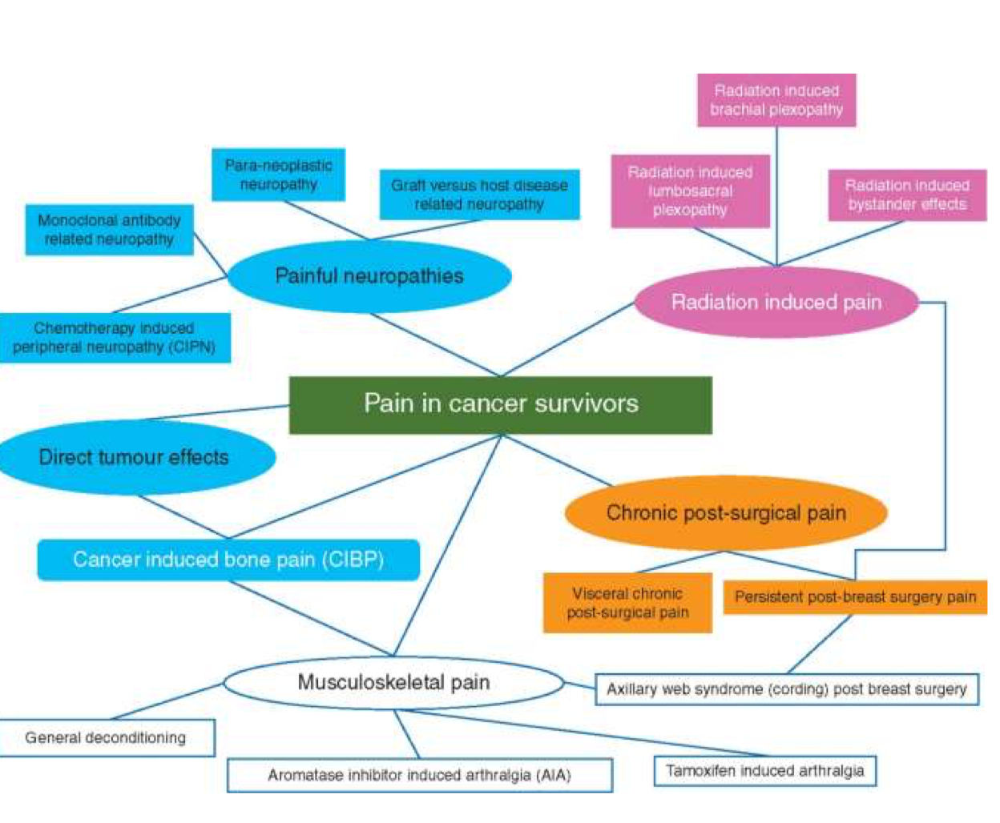
Minimizing Pain Risk
- Spare cranial nerve XI during surgery (prevents shoulder dysfunction and chronic pain)
- Use IMRT (reduces radiation to non-target tissues)
- Prevent dental complications (so patients don't develop ORN, MRONJ, or chronic infections that cause additional pain)
Comprehensive Pain Treatment Options
| Category | Options | Indications |
|---|---|---|
| Nonopioid | Acetaminophen, NSAIDs | Every patient if indicated (first-line) |
| Weak opioids | Codeine, hydrocodone, tramadol | Mild-moderate pain with nonopioid; tramadol 2nd line for neuropathic |
| Strong opioids | 1st line: morphine, oxycodone, hydromorphone 2nd line: methadone, buprenorphine, tapentadol | Moderate to severe pain |
| Ketamine | IV ketamine | Refractory chronic pain |
| TCAs | Amitriptyline, nortriptyline | Neuropathic pain |
| SNRIs | Duloxetine, venlafaxine | Neuropathic pain |
| Anticonvulsants | Gabapentin, pregabalin | Neuropathic pain |
| Topical | Lidocaine, capsaicin | Localized neuropathic pain |
| Neuromodulation | Deep brain stimulation, TMS, spinal cord stimulation | Localized neuropathic pain / under research |
| Complementary | Hypnosis, yoga, tai chi, CBT, acupuncture, massage, music therapy | Chronic pain, aromatase inhibitor-related arthralgia |
Ototoxicity & Chemotherapy-Induced Cognitive Impairment
Ototoxicity
From Cisplatin (chemotherapy):
- Moderate to severe hearing loss in 20% of patients
- Tinnitus in 40%
- Dose-related and often permanent
From Radiation Therapy:
- Sensorineural hearing loss
- Permanent, progressive, and dose-dependent
- Presents ≥12 months post-RT
- High frequencies affected first
- >45 Gy to cochlea = at risk
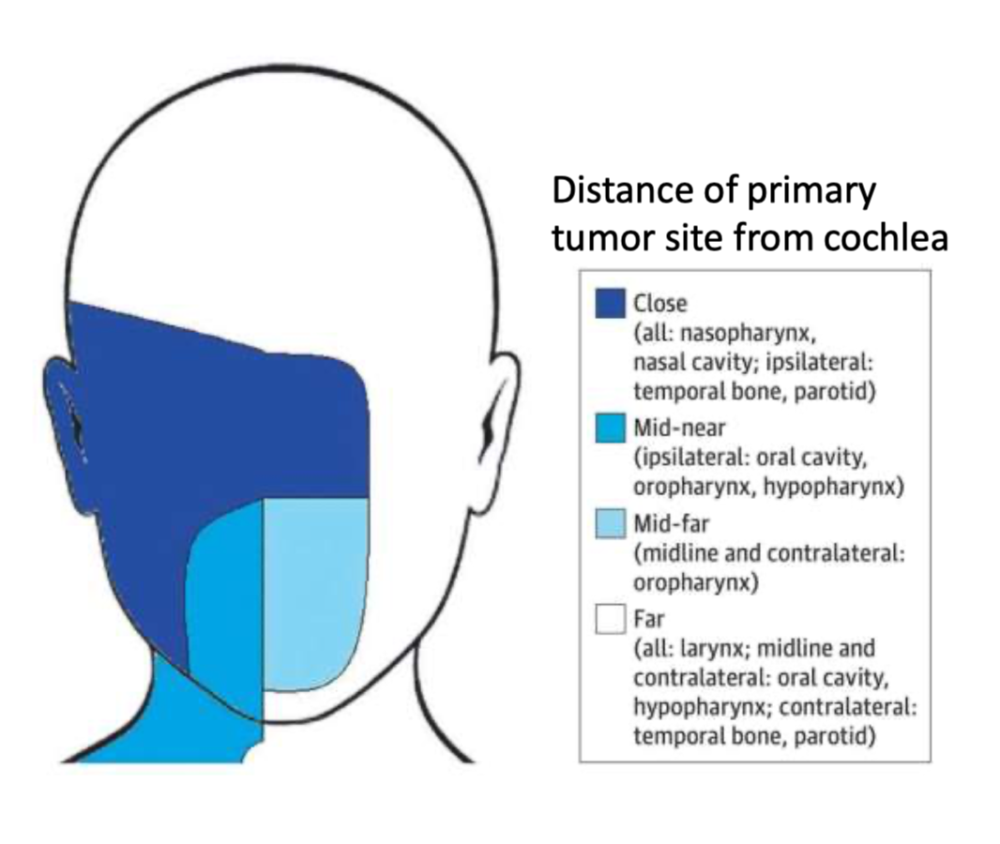
Chemotherapy-Induced Cognitive Impairment (“Chemo Brain”)
- 60% of patients treated with chemotherapy develop cognitive dysfunction
- Mechanism: Direct neuronal toxicity + chronic inflammation
- Can last for years after treatment
- Deficits in concentration, memory, multi-tasking, decision-making, learning, and language
- Treatment: Compensatory strategies, CBT, physical activity
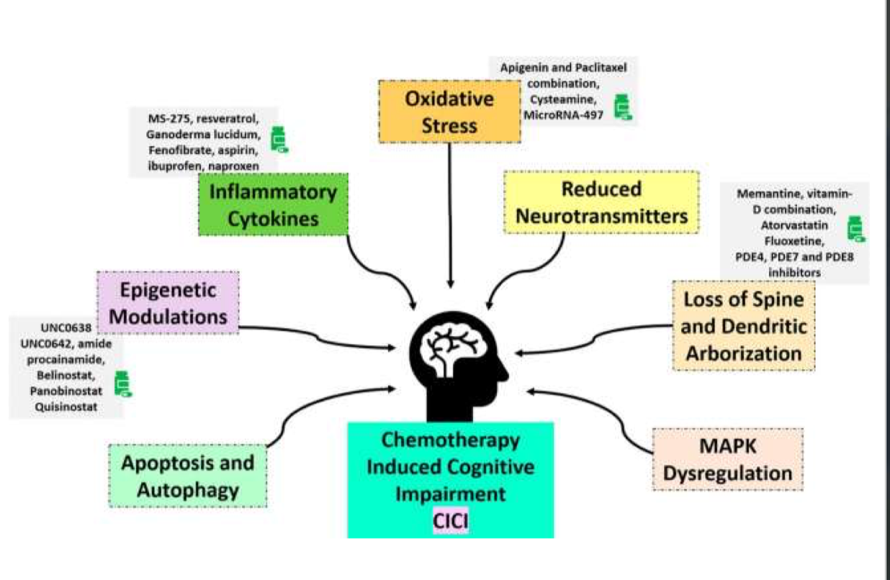
Chemo brain affects your patient's ability to follow oral hygiene instructions, remember appointments, and make treatment decisions. Be patient, provide written instructions, and give extra reminders. Ototoxicity may mean your patient doesn't hear you well — face them directly and speak clearly.
Dental Management of Oncologic Patients
The practical clinical protocols: when to treat, what to prioritize, how to make treatment decisions for patients on cancer therapy. This is where everything comes together.
Pre-Treatment Dental Clearance = Infection Control
Why does oncology send patients to the dentist before starting cancer treatment? Because:
- Odontogenic infections can be life-threatening during profound immunosuppression. A routine periapical abscess that you'd normally treat with antibiotics can become fatal sepsis when the patient has zero neutrophils.
- With appropriate clearance, only 0.57% develop odontogenic complications — extremely low.
- Asymptomatic disease still matters: Non-vital teeth and untreated periapical pathology must be eliminated even if the patient has no symptoms. A tooth that's currently “quiet” can flare during neutropenia.
Timing & Decision Making
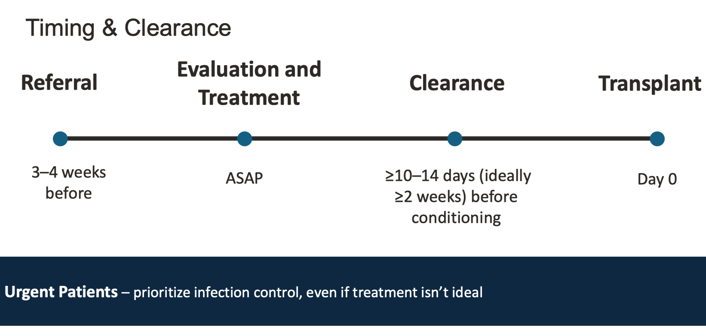
Pre-Treatment Timeline
| Step | When | Details |
|---|---|---|
| Referral | 3–4 weeks before treatment | Oncology refers patient to dentistry for evaluation |
| Evaluation & Treatment | ASAP after referral | Comprehensive exam, radiographs, identify and treat all sources of infection |
| Clearance | ≥10–14 days (ideally ≥2 weeks) before conditioning | All extractions healed, infections resolved, patient cleared |
| Cancer Treatment | Day 0 | Transplant, first radiation, or first chemo cycle begins |
NEVER delay oncologic treatment for dental work unless the tumor is slow-growing AND oncology agrees. Cancer treatment saves lives. Dental work can usually be expedited or deferred. If the timeline is tight, prioritize infection control even if ideal treatment isn't possible.
When Can You Do Dental Work?
| Treatment Type | Healing Window Needed | Highest Risk Period | Can Delay Cancer Treatment? |
|---|---|---|---|
| HSCT | 10–14 days pre-conditioning | Days 0–100 (especially pre-engraftment) | NO |
| Solid Organ Transplant | None required | First 1–6 months post-transplant | NO |
| Standard Chemotherapy | None required | During neutropenia (ANC <1000) | NO — but can do dental work between cycles |
| Intensive Chemotherapy | None required | Days 0–100 (prolonged neutropenia) | NO |
| Head & Neck Radiation | ≥2 weeks pre-RT | Lifelong (ORN risk) | NO |
| Bone-Modifying Agents | Complete healing before starting | Lifelong (MRONJ risk 1.6–14.8%) | Maybe — coordinate with oncology |
Caries Treatment Decision Guide by Cancer Type
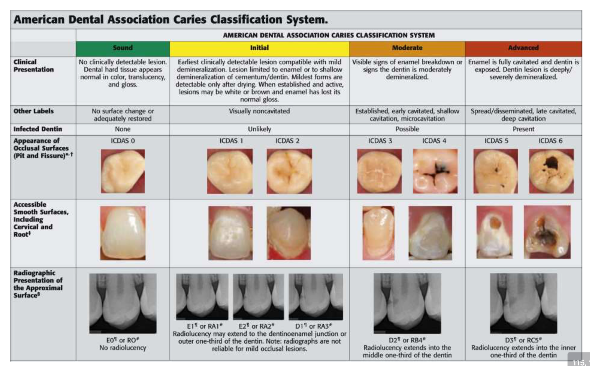
This is the most practical table in the entire lecture. For each depth of caries lesion, the correct treatment decision changes based on what type of cancer treatment the patient is receiving.
| Lesion | HSCT / LVAD | Solid Organ Transplant | Standard Chemo | Head & Neck RT | Bone-Modifying Agents |
|---|---|---|---|---|---|
| D1 (Enamel) | SDF + 5000ppm F | SDF + 5000ppm F | Fluoride varnish | Fluoride varnish | Fluoride varnish |
| D2 (Dentin, not deep) | SDF + ITR if hyposalivation; extract if rampant caries | SDF + ITR; acceptable | Observe or restore if time | Restore if time; SDF if not | Restore before starting BMA |
| D3 (Deep, radio-dense zone) | Extract | Extract or restore if 2–3 days available | Restore if time; observe if asymptomatic | Pre-RT: Extract if in RT field Post-RT: Endo + coronectomy preferred over extraction |
Pre-BMA: Extract On BMA: Endo + coronectomy preferred |
| D4 (Pulpal involvement) | Extract | Extract | Extract or endo | Pre-RT: Extract Post-RT: Endo + coronectomy preferred |
Pre-BMA: Extract On BMA: Endo + coronectomy preferred |
| Severe periodontitis (≥6mm pockets) | Extract | Extract | Observe | Extract if in RT field | Extract before starting |
| Partially impacted 3rd molars | Extract if pericoronitis history | Consider extraction | Observe | Pre-RT: Extract if time Post-RT: Coronectomy if symptomatic |
Extract before starting; coronectomy + endo if already on BMA |
After radiation or while on bone-modifying agents, you want to avoid extracting teeth at all costs because removing a tooth creates a wound in bone that may never heal (ORN or MRONJ). So instead, you do endodontic treatment (root canal to eliminate the infection) and then coronectomy (remove only the crown of the tooth, leaving the roots buried in bone). The roots stay in place, so you never create a bony wound. This is a compromise, but it's far safer than risking osteonecrosis.
Post-Treatment Dental Protocols
| Treatment | Safe for Elective Dental Work | Extraction Precautions | Preventive Protocol |
|---|---|---|---|
| HSCT | ANC >1000, platelets >50K, ideally after Day +100 | Avoid during neutropenia | 5000ppm F daily; chlorhexidine rinse |
| Solid Organ Transplant | After 6 months (immunosuppression tapered) | Check with transplant team first month | 5000ppm F if xerostomia |
| Chemotherapy | Between cycles if ANC >1000 and platelets >50K | CBC on day of procedure | 5000ppm F daily; saline/bicarb rinses |
| Head & Neck RT | Anytime with precautions; avoid high-dose areas (≥50 Gy) | Antibiotics pre- and post-extraction; pentoxifylline 400 mg BID + tocopherol 1000 IU daily | Daily 1.1% NaF gel or varnish 3x/year — LIFELONG |
| Bone-Modifying Agents (oncologic dose) | Elective surgery contraindicated | If must extract: close monitoring q6–8 weeks until healed | Dental exam q6 months; address modifiable risks |
Patients who received head and neck radiation need daily high-concentration fluoride for the rest of their lives. Permanent xerostomia from parotid damage means the teeth have lost their primary defense against acid attack. Without daily 1.1% NaF gel in custom trays or frequent fluoride varnish, these patients develop rampant caries that progresses extremely fast. This is non-negotiable preventive care.
Conclusions
- With declining mortality, cancer survivorship is more important than ever — more patients are living longer with the consequences of their treatment
- Adverse effects of therapy can lead to long-term morbidity that significantly impacts quality of life
- With novel therapeutics (immunotherapy, targeted therapy), we're seeing new categories of side effects (irAEs) that we're still learning to manage
- Long-term mortality data for HNC survivors (Ringash 2015):
| Cause of Death | 5-Year Mortality % (95% CI) | 10-Year Mortality % (95% CI) |
|---|---|---|
| Head and neck cancer | 5.9 (5.7–6.2) | 11.9 (11.6–12.3) |
| Second primary malignancy | 3.4 (3.2–3.6) | 9.5 (9.1–9.9) |
| Cardiovascular disease | 2.7 (2.5–2.8) | 8.4 (8.1–8.8) |
| Other | 2.9 (2.7–3.1) | 9.5 (9.1–9.9) |
| Cancer, unspecified | 0.5 (0.4–0.6) | 1.6 (1.4–1.7) |
Cumulative mortality by cause of death. — Ringash J. (2015). Journal of Clinical Oncology, 33(29), 3322–3327.
- Our cancer survivor patients are dealing with a lot — pain, swallowing difficulties, dry mouth, fatigue, cognitive changes, anxiety, depression, and the ever-present fear of recurrence. Treat them with understanding.
Our 33-year-old patient at the start of this lecture has navigated nearly every topic covered here: she had surgery (partial glossectomy), radiation therapy (with lifelong ORN risk), immunotherapy (pembrolizumab — a checkpoint inhibitor), an irAE (hypothyroidism from pembrolizumab), chronic pain (3000 mg Tylenol daily, sleep disrupted), and now faces possible cancer recurrence (the CT showing centrally necrotic mass more likely recurrent SCC than abscess). She represents the reality of oral oncology: these patients carry the cumulative burden of everything we've discussed, often all at once.